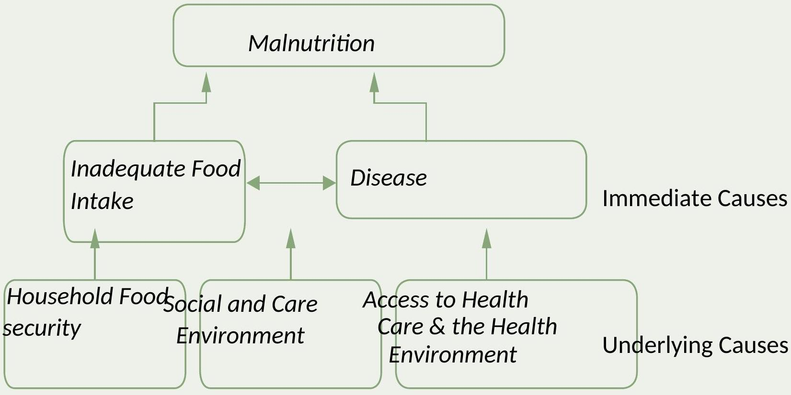

Part 4: Applied Nutrition Topics
COMMUNITY NUTRITION
An approach that provides a long-term solutions, promotes stability and supplies communities with methods to reduce malnutrition-often referred to food security.
A successful fight against global and local hunger must involve a community-centred approach to malnutrition.
CAUSES OF MALNUTRITION
Figure1.1: UNICEF Conceptual Framework: Causes of Malnutrition
National Policies
Formal and Informal Structure
Basic Causes
Context and Potential Resources
They are divided into direct and underlying causes
Direct /Immediate causes of malnutrition:
- Deficient intake of a particular nutrient e.g. deficiency of protein leads to kwashiorkor, deficiency of iron leads to anaenmia, deficiency of vit. A leads to xerophthalmia, deficiency of iodine leads to goitre etc
Underlying causes:
- Infection and disease - Poor nutrition lowers the resistance of the whole body to infections. Under-nourished children are more prone to infection, recover from illness more slowly and frequently die from infection.
- Malnutrition tends to be underreported in disease and mortality statistics because a sick child with malnutrition is likely to develop complications such as gastroenteritis which leads to death; the deaths are then reported as being due to these diseases rather than malnutrition.
- Under nutrition and malnutrition are themselves serious problems, even when they are mild or moderate, as they influence the onset and outcome of infection.
- A malnourished child is more likely to get infections more often and more seriously than a well nourished child.
- Infection causes fever, loss of appetite, diarrhoea and vomiting, all of which interfere with the intake and absorption of food, and malnutrition follows.
- Fever and the repair of damaged cells also increase the need for food.
- Therefore, with less intake and greater need, the infected child with poor reserves tipped into a state of malnutrition.
- Off all infectious diseases, diarrhoea is the most important cause of malnutrition.
- Diarrhoea is common during the weaning periodweaning diarrhoea.
The nutrition-infection cycle
Ignorance about nutrition:
Lack of knowledge about nutrition: Some parents sell nutritious food like eggs and chicken for money so as to buy things like sugar to prepare porridge for children. Parents' lack of understand about the need for frequenct meals in the course of the day. To meet their nutritional requirements, children must feed four or more times a day.
Seasonal changes and lack of food production
It happens in arid areas
Where wars and civil strife disrupt food production
During particular seasons
The worst seasonal food shortages usually occur a few weeks before the next crop is ready.
Under nutrition and malnutrition become common and children may suffer from malaria as well.
Unequal distribution of food
Food may be unequally distributed within the family, within the region and within the country.
Within the family, the distribution of food usually favours the head of the family (the man when present), and the nutritional risk groups (children and women) are at a disadvantage.
Unequal food distribution in a country result from low production of certain foods in some areas, poor infrastructure, lack of storage and preservation facilities and poverty.
These factors lead to a high incidence of malnutrition in some parts of the country.
Factors promoting good nutrition
Good agriculture:
- Clearing land at the right time
- Planting sufficient food crops
- Use irrigation and fertiliser, if necessary, and advice from agricultural instructor
- Harvesting at the right time, and safe storage of the food to avoid loss through pests or through having to sell at a bad time
- A good transport and distribution system to ensure delivery of enough food to all regions
Good economy
- Sufficient money and resources, wisely allocated, for priorities like agricultural improvement, food and fuel, education and health
- Enough cultivatable land to grow sufficient food crops for income.
- Communal production and fair distribution, marketing and pricing (e.g. through co-operative societies)
Healthy environment
- Sufficient safe water located reasonably close to houses
- Adequate fuel for cooking
- Use of latrines and a good general standard of sanitation
- Vector and disease control important for nutrition and general health
Good education
- Teaching about good nutrition and child health in schools, families and communities
- Showing ways of improving present attitudes and practices.
- Special emphasis should be placed on good nutrition for the most vulnerable groups including poor mothers and children.
Healthy size.
- All the children in the family are likely to receive enough good food and attention if the family is small.
- The younger children usually need more care. Encourage family planning
- If either or both parent are from the home, it is important to ensure that the children are looked after properly and that they have enough food.
- Problems with alcohol and drugs are common in disrupted families.
- Appropriate distribution of money, work and food within the community and the family. Support for mothers is important in keeping children healthy
- Priorities within the family include seeing that children get their share of high quality energy and protein food. Children need smaller portions of food given several times during the day.
- Care for the children from broken or one-parent families. Social integration and communal care for these and for underprivileged families, is an children and good maternal care are important factors.
Prevention and control of disease
Most children illnesses are preventable by immunization.
Comprehensive vaccination of children and good maternal care are important factors in good nutrition.
Early detection and effective treatment of acute diseases such as diarrhoeal diseases and respiratory tract infections.
Poverty and disease go together
Customs and beliefs affecting nutrition
Most people have fixed customs and beliefs about different foods and cooking practices.
In some places insects like termites and grasshoppers are eaten. Such insects are rich in proteins and other nutrients. Such practices should be encouraged by the health workers
Some traditional food habits should not be promoted such as where women and children are not allowed to eat chicken and eggs, preventing children with measles from eating meat or taking salt. These traditions should be carefully discouraged in order to prevent resistance and confrontation.
To achieve the goal of good nutrition, poor productivity has to be converted into high productivity; diseases have to be prevented or treated efficiently; and poor education must be replaced by awareness and knowledge.
Improvement of nutritional status by these means will in turn improve people's health, productivity and ability to develop further.
Solving the malnutrition problem must also take into account socio-economic, political and cultural factors that are not illustrated in the diagram.
CHILDFEEDING AND NUTRITION
Breast feeding
Human breast milk is by far the best food for babies and all mothers must be encouraged to breast feed their babies exclusively for six months and to continue breast feeding for as long as possible after that.
Breast milk is:
Always fresh,
safe from diarrhoea and other infections since it contains the mother's antibodies; and it is also easily available, clean and ready for the child at all times.
It is easy to digest, has the right temperature, protects and brings the mother and baby close together. Breast feeding is cheap and is always ready.
Sucking at the breast helps the postpartum uterus to contract and breast feeding gives the mother the opportunity to care for and love her baby.
The mother's breast milk is usually sufficient for a baby for the six months of life.
By the sixth month, supplementary foods (weaning) should be introduced gradually.
Advantages of breastfeeding using the breastfeeding acronym
- -Best for baby
- -Reduced allergies e.g. Asthma, aczema
- -Economical - no waste or cost
- -Antibodies thus higher immunity
- -Satisfies infants nutritional needs
- -Temperature constant, correct
- -Fresh milk-never spoiled
- -Emotional bonding
- -Easy once established
- -Digested easily 3-4 hours
- -Inhibit ovulation, reduces interval between births
- -No mixing required
- -Gastroenteritis greatly reduced
BREAST FEEDING AND HIV/AIDS
A child born to a HIV positive mother may be HIV negative
A child may acquire the virus from the mother through breast milk
The most likely way that this may happen is when a child's gut lining is bruised.
Bruising of the child's gut happens when it is given solid foods at an early age since the foods erode some of the protective membranes along the GI Tract.
HIV positive mother should be counseled during ANC visit to choose between either feeding the baby on breast milk exclusively for four months then stop the breast milk and substitute it with animal milk and solid foods, or to feed the baby on formula feeds or milk from animals sources without any one time giving the baby her breast milk
HIV positive mother should never mix-feed the baby i.e. give breast milk and solid foods at the same time.
Weaning or complemantary feeding
Def:-
Weaning is the time during which a child's diet changes from breast milk (or formula) alone to family food.
Weaning has three stages:
Stage 1: 6months The baby gets almost all nutrients from breast milk but starts other. These first foods must be easy to eat and digest and are called weaning foods.
Stage 2:6-9 months The child continues to get the same amount of breast milk but eats increasing amounts of other foods. The type of food gradually changes from weaning foods to regular family foods.
Stage 3:9-12months The child takes less breast milk and eats more and more of the family foods. Breast milk is mainly a snack and for comfort.
Under-nutrition in Sub- Sahara Africa occurs most frequently in children of weaning age (6months to three years)
To prevent under-nutrition the most important measure to be taken is to improve weaning foods.
WEANING FOODS
Three factors must be borne in mind when preparing good weaning foods for young children.
- To provide enough energy within the small amounts that a young child can eat at one time. Ensuring an adequate intake of energy foods by:
Feeding young children frequently (4 or 5 times).
Mixing foods with a high energy concentration into the basic staple foods. E.g. one teaspoon ( 5 g ) of oil gives 45 Cal; 2 teaspoons ( 10 g ) of sugar give 40 Cal .
NB: Feed young children at least 4 times every day. - To add protein to the staple food i.e. porridge given to the child
Most cereals have a protein concentration of about 7% or $8\%$, but this protein is of low biological value. To improve the quality of the protein, small amounts of other animal or plant foods containing protein must be added. Suitable protein foods are cowpeas, beans, groundnuts, fish powder, dried milk powder, flaked fish, minced meat or eggs.
NB: Continue breast feeding during weaning. - To provide food in a form which is easily swallowed and digested
This is done by mashing the food or grinding it into fine particles and adding liquid until it is soft.
It is important to cook it well.
Teach mothers how to enrich weaning foods.
NB: Use weaning mixtures
NUTRITION IN SPECIAL GROUPS
NUTRITION DURING PREGNANCY AND LACTATION
During pregnancy and lactation, a woman's nutritional needs are greater than at any other time in her life.
All the food the foetus needs to grow and the food needed for production of milk must come from the mother.
A child borne to a poorly nourished mother is likely to have a low birth weight (below 2.5 kg ).
Such babies are more likely to die in the first few months of life.
During pregnancy there is increase in weight of the woman and the BMR also increases.
These increases require extra food to provide extra energy, proteins and other nutrients.
Anaemia is a common problem in Africa, especially among pregnant women.
A child borne to an anaemic mother may have a very low reserve of body iron and is likely to develop anaemia in the few weeks of life.
It is advisable to give iron supplements routinely to pregnant women in areas where iron-deficiency anaemia is common.
This is given in the form of ferrous sulphate tablets to be taken three times a day
Folate, one of the vit. B complex, is also required for making red blood cells and should be given, together with iron, to pregnant women.
Vit. A deficiency is also bad for the baby, so multivitamin tablets should be given during pregnancy in areas where xerophthalmia is prevalent. Encourage pregnant women to eat foods rich in vit. A.
Lactating mother/mothers who have just delivered need to eat more than usual and include foods that are rich in iron and vit. A.
Women must feed well during their reproductive years. They should be in a good nutritional health before and during pregnancy and lactation.
- A woman who becomes pregnant while poorly nourished has a greater risk of complications during pregnancy and is likely to give birth to a low birth weight baby.
NUTRITION AND HIV/AIDS
- Malnutrition is one of the complications of HIV/AIDS.
HIV/AIDS is associated with conditions that result in reduced food intake.
Decreased food intake may result from: an inability to swallow due to sores in the mouth and throat, loss of appetite as result of fatigue or depression, side effects from the medication or reduced quantity and quality of food in the household as a result of inability to work or reduced income due to illness.
HIV interferes with the body's ability to absorb nutrients.
Poor absorption may be caused by infection of the intestinal cells or increased incidence of opportunistic infections such as diarrhoea.
To deal with this problem effectively there should be:
Good nutrition,
Hygiene,
Food safety.
Good nutrition strengthens the immune system to fight Opportunistic infections and delays progression of the disease.
Good nutrition contributes to weight gain and stops wastage
NUTRITION FOR THE ELDERLY
The number of elderly persons in Africa is increasing owing to improved health care and quality of life.
Care of the elderly has changed with many of them being left on their own while their children emigrate in search of jobs.
The elderly have an increased nutrition challenges due to:
- Various growth and developmental challenges
- Illnesses
- Poor appetite
- Lack of teeth making it difficulty to eat any type of food Lack of support and carers who would provide food and cook for them.
These are a few of the challenges that HWs should be concerned about.
The elderly should not be left to become malnourished or die from malnutrition due to neglect.
Abnormal nutrition and clinical malnutrition
- Main types of abnormal (mal) nutrition include:
Undernutrition,
Micronutrient deficiencies
Overnutrition
Underweight is the first stage of protein energy deficiency (a mild or moderate form of protein energy malnutrition-PEM).
PEM affects up to $30 \%$ of children between 1 and 5 years old.
PEM is about 10 times more than all other forms of malnutrition except anaemia.
Protein energy malnutrition (PEM)
Types of PEM:
- There are three syndromes of protein energy deficiency with a similar underlying causes.
These are:
Marasmus
Kwashiorkor
Marasmic kwashiorkor
The syndromes are also referred to as:
Protein Calorie Malnutrition (PCM),
Protein Joule Malnutrition (PJM), and
Protein Energy Deficiency (PED)
- They are rarely seen in more than 5% of children less than 5 years old.
- They are the clinical manifestation of the undernutrition problem in the community.
- The difference between underweight and Marasmus, Kwashiorkor and Marasmic kwashiorkor is seen in the degree of severity of the PEM and the presence or absence of peripheral oedema.
It is only detected as a growth failure when weight for age or upper arm circumference is measured.
Early diagnosis and treatment of underweight prevents progression to clinical malnutrition.
Effects of underweight:
- Slow growth
- Risk of infections as they have weak body defences and do not develop antibodies easily
- Death if exposed to serious infections such as measles, gastroenteritis, whooping cough or tuberculosis.
- Underweight children develop clinical form of protein energy malnutrition very rapidly during episodes of infectious diseases.
NB: Low weight = High risk
Diagnosis:
Early underweight cannot be recognised in the early stages by clinical examination.
It is only diagnosed by regular weight measurements
Underweight is uncommon in breast fed babies under nine months
To detect the "at risk" underweight child between the ages of one and five years is one of the main functions of children's clinics. To do this:
- Follow the growth curve on a weight chart at regular interval
- Where the birth date is not known, use a local calendar of event to estimate the age of the child.
High risk underweight children are those whose weights are between $60 \%$ and $80 \%$ of normal; those whose weights are not rising but are steady; or those whose weights are falling.
When the age is unknown, measure the mid upper arm circumference to assess children under one year old.
Management:
- Increase calories in the diet by augmenting the amount of energy foods. If this is not done, the limited amount of protein in the body will be used to provide the body with energy and therefore be wasted. The best way to increase the calorie intake of a young child is to increase the frequency of meals. Children under 2 years should eat at least 3 and preferably 4 to 5 times a day.
- Protect the child from infection by immunization, prophylaxis against malaria, treatment of intestinal parasites and advice to the mother on hygienic food preparation.
- Weigh the child regularly and encourage the mother by showing her the child's growth curve moving upwards along the normal weight for age path on the growth chart.
- Recommend a mixed diet. Find out which additional foods the mother can easily obtain, and encourage her to mix any of these with the main staple.
- Do not tell the mother to use proteins that she cannot afford.
- The important thing is to increase the amount of staple or energy foods by adding a small amount of oil or margarine and some powdered groundnuts (or groundnut butter) or soya bean flour, cowpeas, red beans or any local legume.
- Children's meals should also include some dark green leafy vegetables and some fruit every day.
NB: Give energy foods for underweight
Prevention
Treatment of underweight children prevents:
- The development of clinical malnutrition (marasmus and kwashiorkor)
- High mortality from infectious diseases, especially measles, tuberculosis
- This means a reduction in morbidity, mortality and hospital admissions.